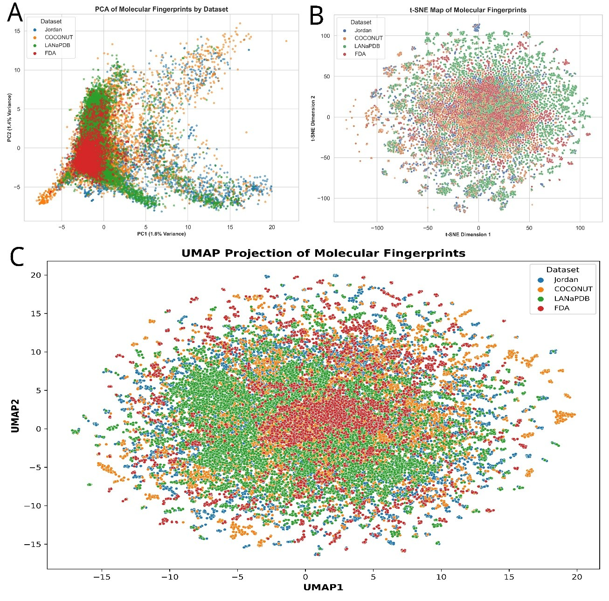

Jordanian Medicinal Plants
Dataset, Chemical Analysis, and Therapeutic Potential
Ethnobotanical Diversity of Jordan Medicinal Plants

Traditional Oil Extraction
Herbal Remedies & Teas
Wild Medicinal Herbs
Phytochemical-Rich Plants
Cultivated Garden Species
Flowering Medicinals
Desert Plants of Jordan
Seasonal Herb Collection
Seed-Based Therapies
Project Summary
Jordan possesses a rich heritage of traditional medicine, with over 2,500 plant species — many of which have been historically used for treating various ailments. This website showcases the outcomes of a large-scale cheminformatic analysis of 7,866 secondary metabolites derived from 475 medicinal plants native to Jordan. By integrating computational tools, this project explores the physicochemical properties, scaffold diversity, and biological activity predictions of these compounds to reveal their potential for drug discovery.
About the Study
The curated phytochemical dataset was assembled through extensive literature mining and then compared to global natural product collections such as COCONUT and LANaPDB, as well as to FDA-approved drugs. Using RDKit, we calculated descriptors like molecular weight, logP, TPSA, and hydrogen bonding capacity to evaluate drug-likeness. Structural diversity was assessed via Bemis–Murcko scaffolds and scaffold clustering. Additionally, ligand-based target prediction methods were employed using ChEMBL Actives to map phytochemicals to potential therapeutic targets. Pathway enrichment and network pharmacology analysis were performed using Cytoscape and Enrichr.
The results demonstrate that Jordanian medicinal plants occupy a unique and diverse chemical space. Key findings include moderate scaffold diversity (F₅₀ = 0.04), biologically relevant physicochemical profiles, and multiple phytochemicals with polypharmacological potential across neurological, inflammatory, and metabolic pathways. The insights support the role of Jordan’s flora as a valuable and underexplored source for natural product-based drug discovery.
Methods Used
The cheminformatic workflow was designed to systematically evaluate and visualize the structural and biological properties of secondary metabolites from Jordanian medicinal plants. Key computational methods included:
- RDKit: Used for molecular preprocessing, descriptor calculation (e.g., MW, LogP, TPSA), salt stripping, and standardization.
- Bemis–Murcko Scaffold Extraction: Used to assess chemical framework diversity and generate cumulative scaffold recovery (CSR) curves.
- Dimensionality Reduction: PCA, t-SNE, and UMAP were applied to binary fingerprints (ECFP4) to visualize chemical space coverage and cluster distribution.
- Ligand-Based Target Prediction: Molecular fingerprints were compared to ChEMBL Actives to infer potential protein targets via Tanimoto similarity.
- Pathway Enrichment: Enrichr and KEGG were used to enrich gene targets and annotate biological pathways.
- Network Pharmacology: Cytoscape was used to visualize compound–target–pathway interactions and uncover systems-level mechanisms.
Key Statistics
Dataset Summary
- Plants analyzed: 475 species
- Phytochemicals identified: 7,866 (7,459 unique)
- Overlaps: 822 with LANaPDB, 4,086 with COCONUT, 111 with FDA
Physicochemical Profile
- Average MW: 325.4 Da
- Average SlogP: 2.18
- Average TPSA: 74.2 Ų
- H-bond donors/acceptors: 2.1 / 4.7
Scaffold & Complexity
- Total unique scaffolds: 2,660
- F₅₀ scaffold diversity: 0.04 (moderate diversity)
- Average nSPS complexity: 0.446
Figures and Results
Physicochemical Properties
Jordan’s flora offers a rich diversity of phytochemicals with notable pharmacological potential. Particularly in the Mediterranean regions of Jordan, plant genera such as Chrysanthemum, Onopordum, Phagnalon, Senecio, Clematis, Ranunculus, Anchusa, and Eryngium are well known for their medicinal relevance. These genera produce diverse secondary metabolites that exhibit antioxidant, antibacterial, cytotoxic, anti-inflammatory, antidiabetic, anti-ulcer, and neuroprotective activities.
The Jordanian medicinal plant dataset was assembled via an extensive literature review across Google Scholar, Scopus, and PubMed, incorporating both historical and recent references. Only species with reported and chemically characterized phytochemicals were included. In total, 475 plant species were cataloged, yielding 7,866 phytochemicals. After standardization and deduplication, 7,459 unique secondary metabolites remained, forming the basis of the curated database.
Compared to global references, Jordanian compounds showed overlap with 822 entries from LANaPDB, 4,086 from COCONUT, and 111 from FDA-approved drugs. These intersections underscore the presence of both established and potentially novel bioactive compounds within Jordan’s flora.
The physicochemical profile of Jordanian phytochemicals shows an average molecular weight of 325.4 Da, comparable to FDA drugs (331.5 Da) but lower than COCONUT (378.2 Da) and LANaPDB (359.7 Da). The mean logP value is 2.18, indicating optimal lipophilicity for oral bioavailability. The TPSA averages 74.2 Ų, within the favorable range for cell permeability. Average hydrogen bond donors and acceptors are 2.1 and 4.7, respectively—values that align well with drug-likeness criteria. Rotatable bonds average 5.0, suggesting balanced molecular flexibility conducive to bioactivity.
Scaffold Diversity
Scaffold diversity was evaluated using Bemis–Murcko frameworks, comparing Jordanian phytochemicals with reference datasets: COCONUT, LANaPDB, and FDA-approved drugs. The cumulative scaffold recovery (CSR) curve shows that only 4% of scaffolds account for 50% of compounds in the Jordanian dataset (F₅₀ = 0.04), reflecting moderately high structural diversity—more diverse than FDA drugs (F₅₀ = 0.13) and approaching LANaPDB (F₅₀ = 0.10).
Despite its smaller size, the Jordanian dataset contains 2,660 unique scaffolds across 7,866 compounds, indicating a substantial scaffold repertoire. In comparison, COCONUT includes over 200,000 scaffolds, while FDA-approved drugs contain only 1,301, due to their focused chemical optimization.
The area under the CSR curve (AUC) confirms these findings: the Jordanian dataset shows a balanced diversity (AUC = 0.803), intermediate between the FDA dataset (0.748, higher diversity) and COCONUT (0.822, lower diversity). This structural variation is supported by complexity scores (~0.446), comparable to LANaPDB.
The most common scaffolds in Jordanian phytochemicals include benzene (7.57%), flavone backbones (1.84%), cyclohexane (1.67%), and tetrahydropyran (1.52%). These frameworks are typical of bioactive classes such as flavonoids and terpenoids.
Compared to COCONUT and LANaPDB, the Jordanian scaffold profile shares some overlaps (e.g., benzene and ethers), but differs in relative abundance and complexity. FDA drugs, on the other hand, feature optimized scaffolds like biphenyl and pyridine, reflecting pharmaceutical design priorities.
Molecular Complexity (nSPS)
Molecular complexity was assessed using the normalized spacial score (nSPS), which integrates structural features such as ring systems, stereocenters, rotatable bonds, and sp³ carbon content, normalized by heavy atom count. This score reflects the three-dimensional character of molecules—an important factor in drug-likeness and bioactivity.
Jordanian phytochemicals displayed a mean nSPS of 0.446, comparable to LANaPDB (0.432) and slightly lower than COCONUT (0.470), indicating a diverse yet moderately complex structural profile. In contrast, FDA-approved drugs had a lower mean nSPS of 0.377, consistent with their design constraints for manufacturability and pharmacokinetics.
The Jordanian dataset shows a wide distribution of complexity values, suggesting the presence of varied stereochemical and conformational features. This diversity supports the dataset’s utility for exploring novel bioactive scaffolds with favorable pharmacokinetic traits.
Notably, higher molecular complexity has been linked to improved target selectivity, reduced off-target effects, and enhanced ADME properties. Therefore, incorporating nSPS in phytochemical evaluation enhances prioritization of compounds with promising therapeutic potential.
Dimensionality Reduction and Visualization
To explore the global chemical space of Jordanian phytochemicals alongside other natural product datasets and FDA-approved drugs, we applied three complementary dimensionality reduction techniques: PCA, t-SNE, and UMAP.
Principal Component Analysis (PCA) (Figure 5A) offered a rapid overview of dataset separability based on extended molecular fingerprints. Although PC1 and PC2 captured only 3% of the variance, PCA effectively distinguished between tightly clustered FDA drugs and more dispersed Jordanian phytochemicals. This suggests a broader chemical diversity in the Jordanian set, with partial overlap across LANaPDB and COCONUT.
t-distributed Stochastic Neighbor Embedding (t-SNE) (Figure 5B) preserved local molecular similarities and revealed multiple distinct clusters for Jordanian compounds, suggesting varied substructural motifs. In contrast, FDA drugs formed a tight cluster, while COCONUT and LANaPDB showed moderate spread with overlapping chemical features.
Uniform Manifold Approximation and Projection (UMAP) (Figure 5C) provided a balanced view of both global and local structural relationships. Jordanian phytochemicals showed broad, well-separated clusters, indicating high structural diversity. The COCONUT and LANaPDB datasets showed distinct but overlapping patterns, while FDA compounds again formed a dense, centralized group.
Together, these three visualizations highlight the chemical richness of Jordanian secondary metabolites. While PCA captures global variance trends, t-SNE unveils fine-grained molecular clustering, and UMAP effectively balances both perspectives. This integrative approach enhances the identification of novel scaffolds and informs natural product-based drug discovery.
Compound–Target Heatmap
In our heatmap analysis of Jordanian phytochemicals, isoeugenol exhibited notable correlations with Amyloid Precursor Protein (APP) and Prostaglandin E Synthase (PTGES), two proteins critically implicated in neurodegenerative and inflammatory pathways. APP is involved in Alzheimer's disease through its role in amyloid-beta peptide production and plaque formation. While direct interaction with isoeugenol has not been experimentally validated, the compound’s antioxidant and neuroprotective properties suggest possible indirect effects on APP-related mechanisms.
PTGES is an enzyme in the biosynthesis of prostaglandin E2, a key mediator of neuroinflammation. Isoeugenol has been shown to inhibit upstream cyclooxygenase enzymes, thereby reducing prostaglandin synthesis. This observation supports the potential role of isoeugenol in modulating inflammatory responses, although its direct impact on PTGES requires further investigation.
Network Pharmacology

The network pharmacology analysis of Jordanian secondary metabolites reveals a complex web of interactions among compounds, predicted protein targets, and biological pathways. The network comprises over 2,300 nodes and 6,300 edges, offering valuable insights into potential therapeutic mechanisms.
Key compounds such as castanospermine were highlighted for their inhibitory activity on glycoprotein-processing enzymes, suggesting applications in antiviral and anticancer therapies. Beta-carboline alkaloids like harmol and pegaharmine J showed strong potential to modulate neurodevelopmental kinases (DYRK family and HASPIN), positioning them as promising candidates for neuropharmacological research.
The analysis also uncovered the dual modulatory role of agmatine in both mammalian neurotransmission and microbial metabolism. Immune receptor interactions, such as those involving KLRB1A (CD161), hint at unexplored immunomodulatory roles for microbial metabolites.
Moreover, polyphenolic compounds were predicted to inhibit serine proteases like SUB1, suggesting roles beyond traditional antioxidant activity. Ecdysteroids were found to activate hormone receptors, potentially influencing both insect and mammalian physiology. These insights underscore the multi-target nature of natural compounds and their broad therapeutic relevance.
Overall, the integration of cheminformatics and network pharmacology reveals the vast bioactivity potential of Jordanian natural products and their relevance across oncology, neurology, infectious diseases, and metabolic disorders.